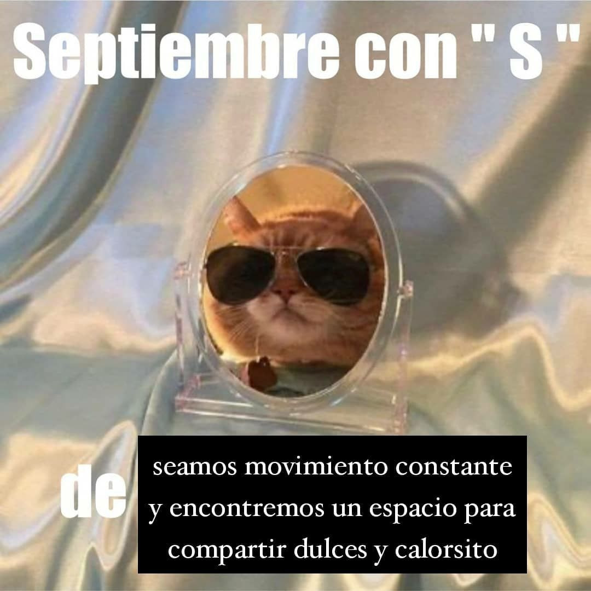

7 Su paso un círculo de ceniza
ya adivino el ronroneo
de les gatis que al acecho
van marcando mi retorno
del sueño a la vigila pero también
de un clima a otro
lo acomodan a
pura pose larga o fetal casi como dedos
brujos que en el movimiento
surten el conjuro
la necesidad ontológica de convertir la casa
en corazón de batucada silban
y son ellos las que silban podría
decirse franqueando la herida
abierta de la domesticación asilvestrada
porque un gato en cada casa o más
es civilización latente y una toma
del poder se sabe entonces
en su delirio encuentran
siempre a través de otros ojos en cada rostro el rostro del poeta
que por ellos clama sin rescate
perdón señor perdón señora
por mear el árbol de su cora
observan dijimos
observan desde una medianera estrellada algo perdida
el baldío o
la muerte o
la grupa entre los contenedores de la supervivencia quizá el futuro
del afecto carpincho entre nosotras
a contrapelo del psicoanálisis y los desiderativos antropocénicos
porque es otro orden estremecido de pelaje
nunca una mirada bienhabida que consagre las leches de
lo mojado a un malambo
errante por ejemplo
el abejorro
se diría traza
ahora una línea penetrante
en la cancelación
de la existencia estira su extinción y dice mundo
va haber mundo
para siempre
mi vida es efímera y fortuita y al polvo vuelve trascendente
pero los felinos traman incluso hasta
tejen se diría
las olas de la pampa que brotan en una vereda
porque es suya la ciudad en ruinas
y lo saben
la sinfonía agorrionada de los futuros desplomados
sobre sí
mejor dicho devuelven en captura la alianza
interespecies de una comunidad imposible a los trotes mansos de fuerzas que nunca debimos no
y lo sabíamos haber desafiado ay
es otro corte mamífero la peluza transmutada de les gatis
su quejido un codo de amor sublunar y silencioso
no por aspereza pero la rambla conjuga
una manada guerrillera
gatis contra el reino de la mercancía
sino por la anónima utopía
de armar querencia con garritas
